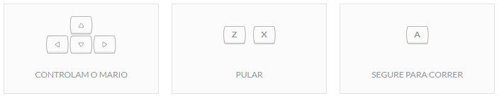

Jogos do Mario
Aqui tem-se disposto uma pequena coletânea de jogos do super mario. Voce pode aproveitar e se divertir o quanto quiser, ao lado você pode conferir uma pequena descrição dos jogos, aperte o botão ao lado do título do jogo para poder verificar as teclas a serem usadas nos jogos. Os jogos do Mario apareceram pela primeira vez em 1985 através dos jogos de fliperama, Desde então, ele se popularizou mundialmente e conquistou espaço em diversos consoles diferentes. Inclusive, no mundo online. Tudo isso fez com que o Mario se tornasse uma grande franquia, servindo de inspiração para filmes, desenhos animados e ilustrações. O personagem é representado pela figura de um encanador italiano que vive nos EUA. Hoje, existem diversos jogos do Mario, que leva seus jogadores para viverem uma série de aventuras com ele.
Super Mario Endles World
Neste game reviva a grande, épica, incrivel batalha contra bowser, o grande vilão da franquia Super Mario, e tenha a sensação de derrotalo novamente como em sua infância! O Rei Bowser Koopa, conhecido no Japão como Koopa, ou somente Bowser, é o principal vilão do universo Mario, consagrada franquia da Nintendo, e também um dos mais famosos vilões da empresa.

Luigi in Sonic
Neste game incorpore o Mario, para os conhecidos Luiji o Soziar com outras roupas do Super Mario, e divirta-se encarando desafios e muitos inimigos, com boses e diversas experiencias unicas! Luigi é um personagem fictício de videogames produzido pela Nintendo. Criado pelo designer de jogos Shigeru Miyamoto, Luigi é irmão do Mario que é mascote da série, ele é o seu companheiro em vários jogos. A primeira aparição de Luigi se deu no jogo Mario Bros. em 1983, como personagem controlado pelo segundo jogador.
Mario Kopas Revenge
Neste game Brinque com as Kopas tartarugas filhotes do grande bowser e encarre os desafios que o jogo lhe propõe, mas cuidado ele não é um jogo simples e promete muitos desafios boa sorte contra essas temidas tartarugas! O Rei Bowser Koopa, conhecido no Japão como Koopa, ou somente Bowser, é o principal vilão do universo Mario, consagrada franquia da Nintendo, e também um dos mais famosos vilões da empresa.
Yoshi in Sonic
Neste game Jogue a dois encarando desafios em dobro com diversão em dobro, com marios personalizados, exclusivamente desenvolvidos para a arte conceitual do jogo, você será capaz de encarar essa jornada com seu amigo e finalizar essa obra? Super Mario Bros. é um jogo eletrônico lançado pela Nintendo em 1985. Considerado um clássico, "Super Mario Bros." foi um dos primeiros jogos de plataforma com rolagem lateral, recurso conhecido em inglês como side-scrolling.